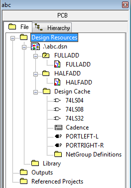
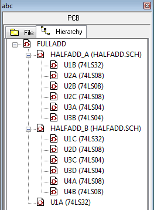

The project manager appears in the Capture session frame whenever you open or create a project. Use the project manager to collect and organize all the resources you need for your project throughout the design flow. These resources include schematic design files, part libraries, netlists, VHDL or Verilog models, simulation models, timing files, stimulus files, and any other related information.
Views
The project manager provides two views of a project.
- File View
- Hierarchy View
File view |
|---|
| The file view is organized into folders and displays all the files included in the project. |
|  |
| These files may include VHDL models, netlists, schematic pages, simulation models, stimulus files, or any other files that contain information related to the project. |
Hierarchy view |
|---|
| The Hierarchy tab shows the hierarchical relationship among the various design modules. |
|  |
|
A design module is a structural block, typically represented as a distinct hierarchical entity, that defines the functionality of a particular portion of your design. A design module in Capture can be a VHDL or Verilog model or a schematic folder. Each instantiation of a particular module appears in the hierarchy view as part of a hierarchical "tree." The hierarchical view of the design is derived from the files that exist in the Design Resources folder. |
Project manager behavior
Within the project manager, you can expand or collapse the
structure you are viewing by clicking on the plus sign or
minus sign to the left of a folder. A plus sign indicates
that the folder has contents that are not currently
visible; a minus sign indicates that the folder is open and
its contents are visible, listed below the folder.
When you double-click on a schematic folder, Capture
displays the schematic pages within that folder. If the
folder is a VHDL model, Capture displays each defined
entity in that model. If the folder is a Verilog model,
Capture displays each defined module in the model.
When you double-click on a schematic page, a VHDL entity,
or Verilog model, you open that object in an appropriate
editor. For example, double-clicking on a VHDL entity opens
the VHDL model file at the location of that entity
definition in Capture's VHDL editor.
Each project you open has its own project manager window.
You can move or copy folders or files between projects by
dragging them from one project manager window to another
(as well as from the Windows Explorer). If you close a
project manager window, you close the project.
One design for one project
Each project may contain one design (.DSN). The design may consist of any number of schematic folders, schematic pages, or VHDL or Verilog models, but must have a single root module. The root module is the module that is defined as the top-level entity for the design. That is, all other modules in the design are referenced within the root module.